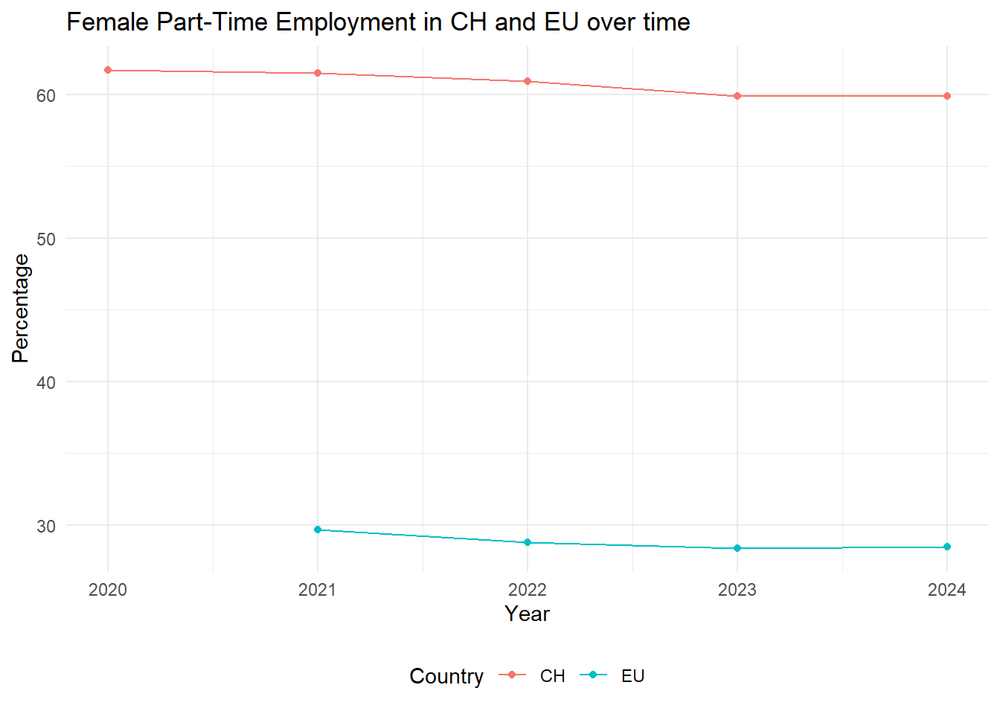
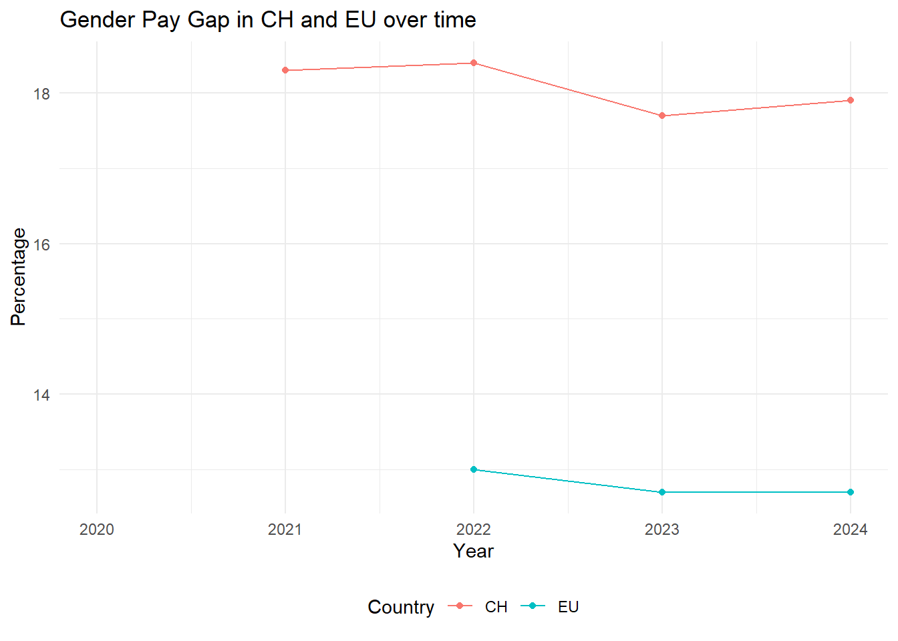
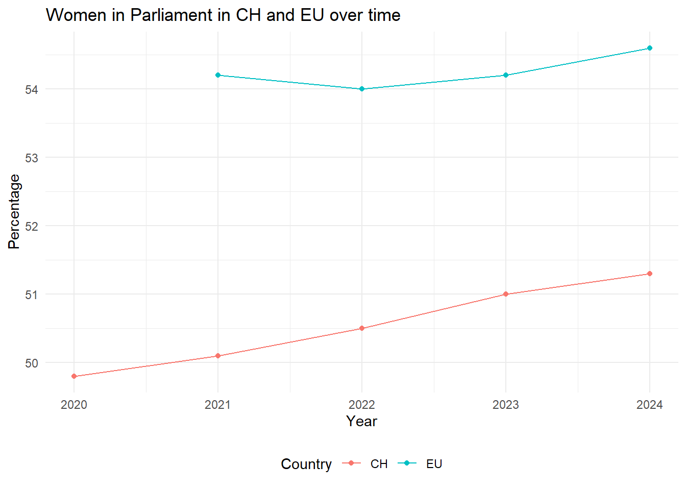

Chapter2 Chapter 2: Example Blog Post
You are encouraged to create blogs visually engaging graphs, plots and data tables, and other impactful visualizations. Experiment with diverse methods of displaying data or try to calculate regressions. Treat this as your playground to creatively experiment with the vast array of tools and features R offers.
Equality Between Women and Men: How Far Have We Come?
Article 8, Section 3 of the Swiss Federal Constitution states: “Men and women have equal rights. The law shall ensure their legal and actual equality, particularly in family life, education, and employment. Men and women are entitled to equal pay for work of equal value.”
While this constitutional mandate is clear, achieving true gender equality remains a challenge. So how far have we come in Switzerland? Are we on the right track? And how does Switzerland compare to its European neighbors?
To answer these questions, the Federal Statistical Office (Bundesamt für Statistik, BFS) conducted a comprehensive survey in December 2024 titled “Equality Between Women and Men: A European Comparison.” This blog post highlights the most significant findings from the report.
Let’s begin by examining Switzerland’s performance in 2024 compared to other European countries. The survey conducted by the Swiss Federal Statistical Office (BFS) focused on five key indicators: female tertiary education attainment, female employment rate, the prevalence of part-time employment among women, the gender pay gap, and the representation of women in parliament.


The results paint a mixed picture for Switzerland. In terms of tertiary education attainment among women, Switzerland lags behind many European countries, ranking near the bottom. On the positive side, the female employment rate is among the highest in Europe. However, this is tempered by the fact that part-time employment among women is also significantly high, which diminishes the impact of the overall employment rate.
When it comes to the gender pay gap, Switzerland fares poorly, holding the third-highest position in Europe—a glaring issue that underscores the urgent need for stronger measures to promote equality. On a brighter note, Switzerland performs relatively well in the representation of women in parliament, ranking in the upper third compared to its European neighbors.
While there are areas of progress, Switzerland clearly has significant work to do to achieve true gender equality.
Now, let’s examine how Switzerland has progressed over the past few years compared to the European average.




 The trends clearly indicate progress in the right direction, with both Switzerland and the EU making strides toward greater gender equality—although the pace could certainly be faster. However, when comparing progress over time, the results do not reveal significantly more insights than the 2024 bar-plots.